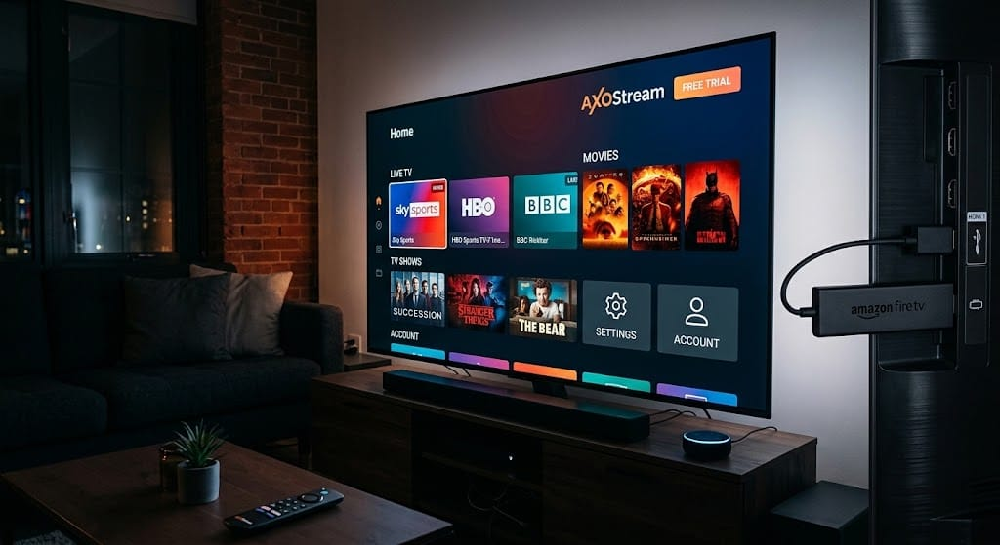
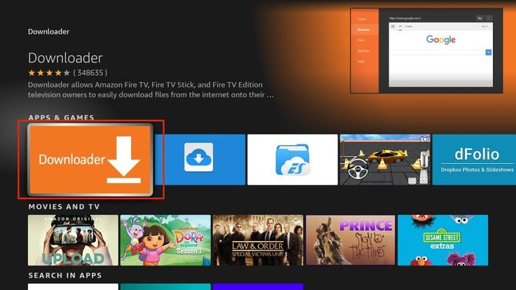
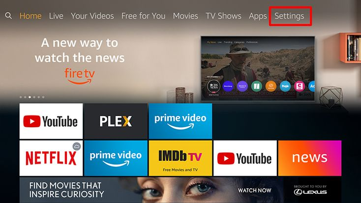
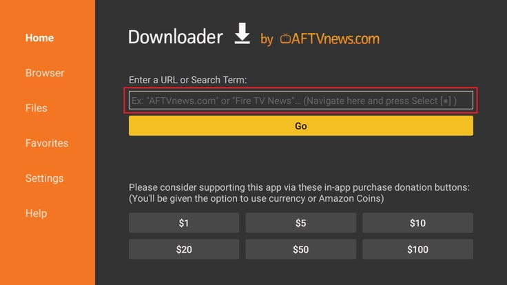
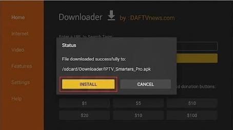
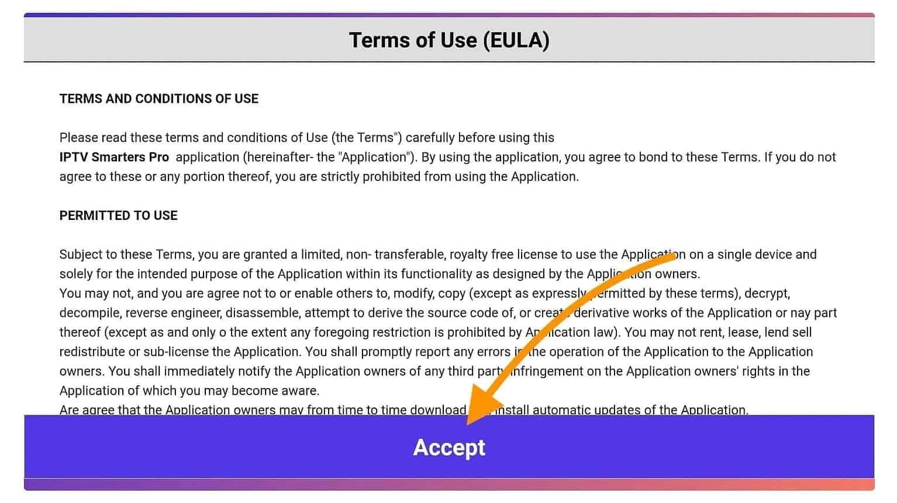
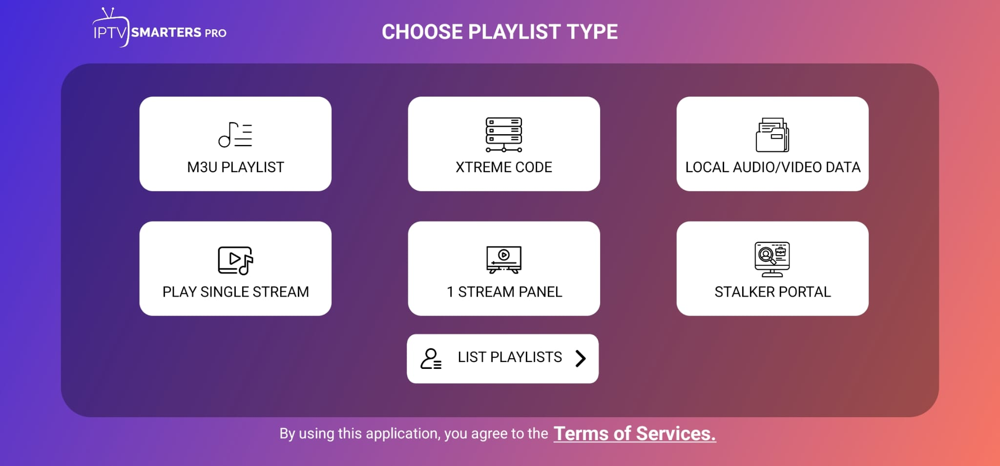
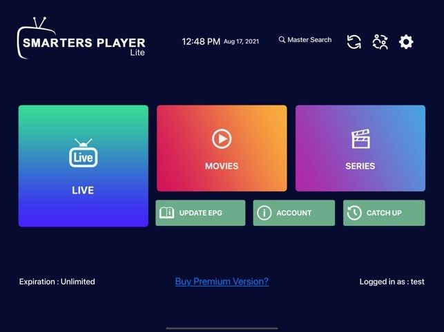

How to Install IPTV Smarters Pro on Amazon Firestick (2026 Guide)

IPTV Smarters Pro is one of the most popular players for watching live TV, movies and series on the Amazon Firestick. Because it is not always available in the Amazon Appstore, you install it by sideloading with the free Downloader app. This guide walks you through every step, from preparation to troubleshooting, in about 10 minutes.
Prerequisites
Before you start, make sure you have the following:
- An Amazon Firestick (Fire TV Stick Lite, HD, 4K, 4K Max) or Fire TV Cube, connected to your TV and Wi-Fi.
- A stable internet connection: at least 10 Mbps for HD and 25 Mbps for 4K.
- Your IPTV subscription details: Xtream Codes login (username, password, server URL) or an M3U link.
- About 100 MB of free storage on the device.
Step-by-Step Installation (Using Downloader App)
Step 1: Install the Downloader app
- From the Firestick home screen, select Find then Search.
- Type Downloader and choose the orange app with the white arrow (by AFTVnews).
- Click Get or Download, then wait for it to install.

Step 2: Allow installs from unknown sources
- Go to Settings → My Fire TV → Developer Options.
- Select Install unknown apps and turn Downloader to ON.
If Developer Options is hidden, go to Settings → My Fire TV → About, click Fire TV Stick seven times, then go back.

Step 3: Download IPTV Smarters Pro
- Open Downloader and allow the permission prompts.
- In the URL box on the Home tab, enter the official download URL:
https://iptvsmarters.com/smarters.apkand press Go. - Wait for the APK file to finish downloading.

Step 4: Install the app
- When the installer opens, click Install.
- After App installed appears, click Done.
- Back in Downloader, choose Delete twice to remove the APK and free space.

Setup Guide
Step 5: Launch and accept the terms
Open IPTV Smarters Pro from Your Apps & Channels. Accept the Terms of Use on first launch.

Step 6: Add your user
- Select Add New User and choose Login with Xtream Codes API.
- Enter any Name (e.g. "AxoStream"), then your Username, Password and Server URL exactly as provided.
- Click Add User and wait for the content to load.
If you have an M3U link instead, choose Load Your Playlist or File/URL and paste the link.

Step 7: Start watching
Pick Live TV, Movies or Series from the main dashboard. Use the remote's Select button to open a category, and press Menu to add channels to favorites.

Optional: Move the app to the front of your home screen
Press and hold the Home button, open Apps, highlight IPTV Smarters Pro, press Menu and choose Move to place it in the first row.
Troubleshooting Common Issues
"Install blocked" or the app won't install
Re-check that Install unknown apps is enabled for Downloader. If storage is full, uninstall unused apps and try again.
"Login failed" or "Invalid credentials"
Make sure there are no extra spaces, the server URL includes http:// and the port, and the username and password are case-sensitive. Copy them directly from your activation message.
Buffering or freezing
- Test your speed: at least 25 Mbps is recommended for 4K.
- Use 5 GHz Wi-Fi or an Ethernet adapter.
- Restart the Firestick and your router.
- Clear the cache: Settings → Applications → Manage Installed Applications → IPTV Smarters Pro → Clear cache.
Channels or EPG not loading
Open Settings in the app and choose Reload Live/EPG. If it persists, remove the user and add it again.
The app crashes or closes on launch
Uninstall IPTV Smarters Pro, restart the Firestick, and reinstall the latest version. Also check for a Fire OS update in Settings → My Fire TV → About.
Still stuck? Our team is available 24/7 via WhatsApp or the contact page.